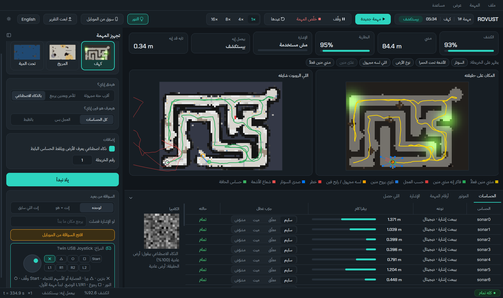
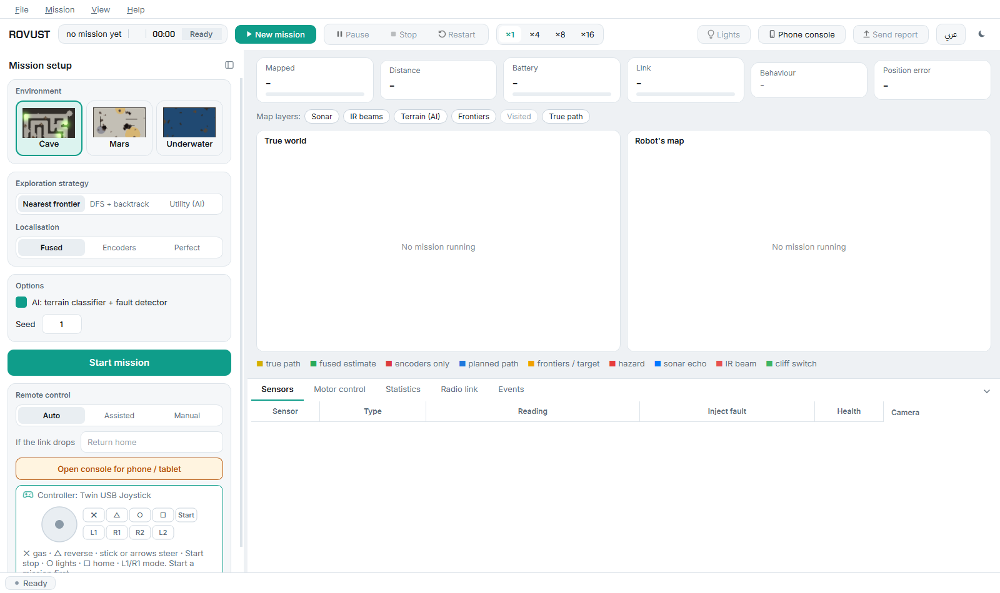
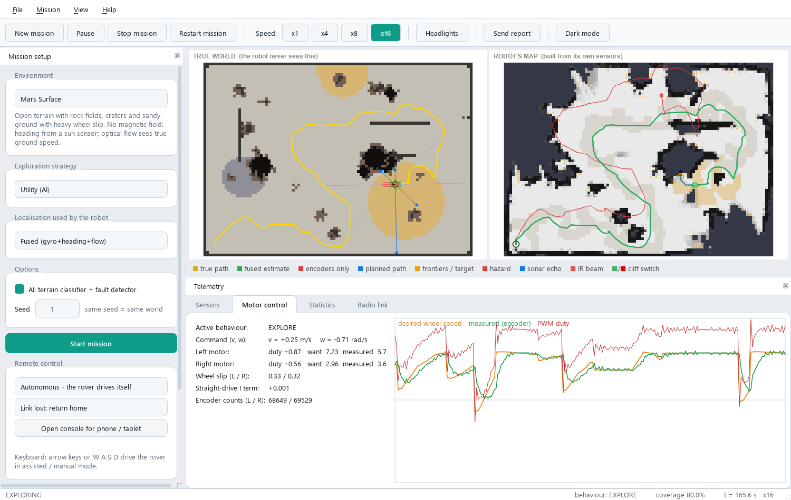
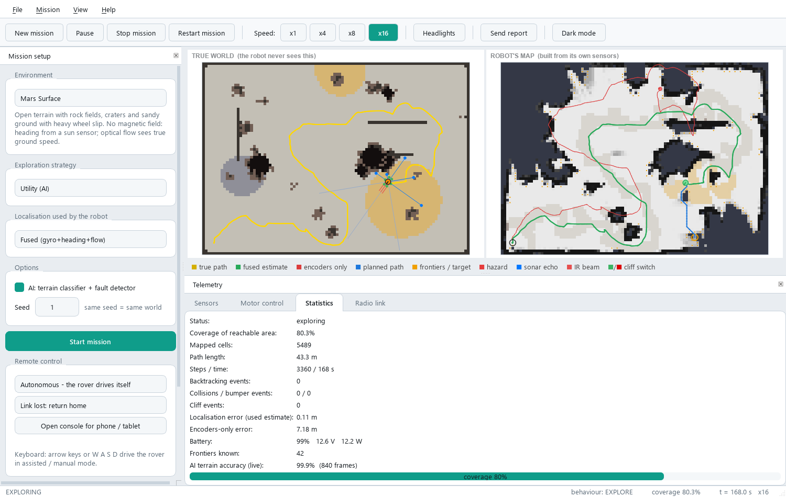
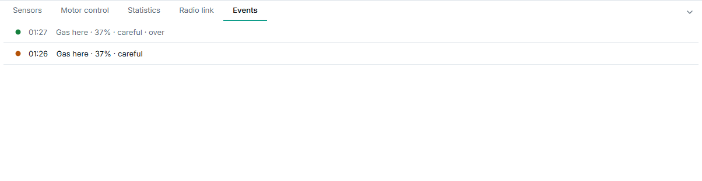
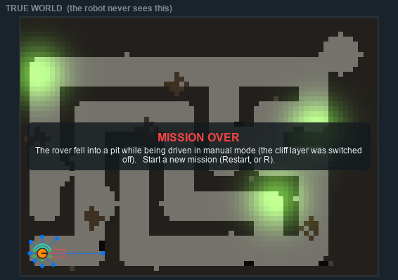
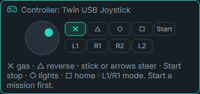
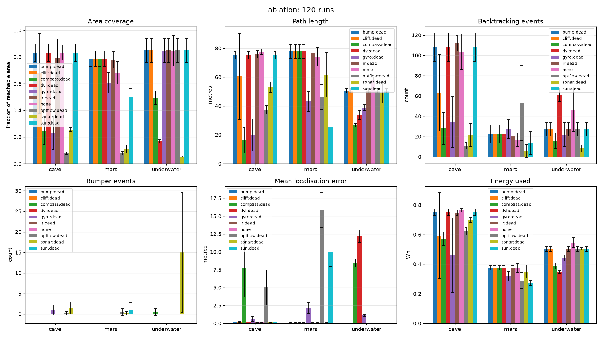

Rovust — دليل الفريق الكامل
1. الفكرة في دقيقة
بننزّل روبوت في مكان ما يعرفوش — من غير خريطة ومن غير GPS — ولازم: يتحرك بأمان، يتفادى الجدران والحفر، يبني خريطة، يقرر هو يروح فين، ويرجع البيت قبل ما البطارية تخلص. ده بالظبط وضع روفر على المريخ أو روبوت في منجم منهار.
اللي يفرّق المشروع إن الروبوت مبني من تحت لفوق زي الحقيقي: موتورات DC بـ PWM، encoders، PID، سنسورز بفيزياء حقيقية وعيوبها، وبعدها الخريطة والقرار. ونفس الكود بيشتغل في 3 بيئات مختلفة تمامًا — اللي بيتغير هو ملف الإعدادات بس (sim/config.py).

2. رحلة المهمة من أول ما تدوس Start
المهمة بتنتهي بواحدة من 4: returned رجع البيت، fell وقع في حفرة (ممكن بس في Manual)، battery_dead البطارية خلصت، stopped انت وقفتها. في كل الحالات بتظهر لافتة بالسبب على الخرايط، والتنبيه تحت بيقول «المهمة خلصت»، وبتقدر تبعت تقرير.
3. طبقات الروبوت (من تحت لفوق)
كل طبقة بتعتمد على اللي تحتها، وكل طبقة مربوطة بمحاضرة:
4. الموتورات والتحكم (محاضرات Actuators وControl)
الموتور (sim/robot/motor.py)
المتحكم مش بيشوف غير duty cycle من −1 لـ +1. الإشارة بتختار اتجاه الـ H-bridge (SW1+SW2 لقدام، SW3+SW4 لورا)، والقيمة بتتحول لجهد فعّال غير خطي: فيه منطقة ميتة تحت 6% (الاحتكاك الساكن)، ومنحنى أسّي، وسرعة الاستقرار بتقل مع الحمل (رمل، طين). عشان كده لازم calibration table زي ما المحاضرة قالت — calibration_table() بتطلعها.
الـ Encoder (encoder.py)
على عمود الموتور قبل الـ gearbox (16 tick × 30 = 480 tick للفة العجلة). سرعة العجلة المقاسة = فرق الـ ticks في الخطوة — قيمة مقطّعة (quantised)، ودي الحاجة الوحيدة اللي الـ PID بيشوفها.
التحكم (control.py, drive.py)
اتنفذت كل الصيغ اللي في المحاضرة: on-off، on-off بـ hysteresis، وPID بالصيغة التزايدية المنفصلة:
R_n = R_{n-1} + Kp(e_n − e_{n−1}) + Ki(e_n + e_{n−1})/2 + Kd(e_n − 2e_{n−1} + e_{n−2})
وفوقهم الـ driving straight بتاع المحاضرة (شكل 5.16): I-controller بيجمع فرق المسافة بين الـ encoders ويرجّعه للعجلتين. الانزلاق بيتطبق بعد الموتور فالـ encoders ما بتشوفوش — ده السبب الفيزيائي إن الـ dead reckoning بيتوه.

5. السنسورز — كل واحد مكانه وسببه (محاضرات Sensors 1 & 2)
كل سنسور شايل تصنيفه زي المحاضرة (local/global · internal/external · active/passive · binary/analog/digital)، والتناظري منهم بيعدي على ADC 10-bit، وأي واحد ممكن تبوّظه وقت الشغل (stuck / dead / noisy) من عمود «جرّب عطل» في تبويب الحساسات. اضغط على فلتر:
| السنسور | التصنيف | مكانه | ليه هنا بالذات | البيئة |
|---|---|---|---|---|
| Sonar ring 8× (12× تحت المية) | activeexternaldigital | حوالين الجسم على ارتفاع الـ bumper، S0 لقدام | سنسور الخريطة الأساسي. مخروط 15°، فقد الصدى لما الزاوية تبقى مائلة (الجدار يبان أبعد — زي المحاضرة)، تداخل بين الجيران، وضوضاء بتزيد مع المسافة. | كلها |
| IR PSD 3× لقدام | activeexternalanalog | قدام، موزعين على عرض الجسم، مغمورين 6 سم | أي حاجة الجسم هيخبط فيها بتقع في شعاع. الخرج V=24/(d+4) غير خطي → lookup table بالمعايرة؛ تحت 6 سم المنحنى بيرجع لورا فالسنسور مغمور عشان مفيش حاجة تقرب أكتر (نص المحاضرة). | كهف، مريخ |
| Cliff switches 6× | activeexternalbinary | زوج قدام، زوج على الجنبين، زوج ورا — بيبصوا لتحت | السنسور الأفقي ما بيشوفش حفرة. الزوج الخلفي موجود لأن كل مناورات الهروب بترجع لورا، والجانبي لأن الجسم بيحتك بالحفرة وهو بيلف. نقص زوج منهم كلّفنا روبوت في الاختبار. | كهف، مريخ |
| Bumpers 2× | passiveexternalbinary | شريط قدام، نص يمين ونص شمال | خط الدفاع الأخير. الزوج بيقول نلف ناحية إيه (المحاضرة). اللمس من الجنب (تيار بيزق الروبوت على جدار) ما بيضغطش bumper أمامي. | كلها |
| Encoders 2× | passiveinternaldigital | على عمود الموتور | feedback للسرعة + dead reckoning. | كلها |
| Compass | passiveinternaldigital 1° | فوق في النص بعيد عن الموتورات | اتجاه مطلق بيحد انحراف الـ gyro. في الكهف فيه اضطراب مغناطيسي محلي (حديد في الصخر). مش مركّب على المريخ — مفيش مجال مغناطيسي نافع. | كهف، تحت المية |
| Sun sensor | passiveexternaldigital | فوق | اللي روفرات المريخ الحقيقية بتستخدمه للاتجاه المطلق — بديل الـ compass. | المريخ |
| Gyro (yaw) | passiveinternaldigital | مركز الكتلة | فيه bias ثابت: 0.006 rad/s لوحدها = 20° في الدقيقة. عشان كده بيتعلم الـ bias وهو واقف أول 1.5 ث والـ compass بيصحّحه. | كلها |
| Accelerometer | passiveinternaldigital | مركز الكتلة | ميل الأرض من متجه الجاذبية، مع فلتر لأن العجلة بتتلخبط مع الميل في عينة واحدة (المحاضرة: الـ inclinometer بيتأخر). سلوك SLOPE بيرفض ميل أكتر من 11°. | كلها |
| Camera | passiveexternaldigital | قدام، مايلة 15° لتحت | بتشوف 16×16 بكسل من الأرض اللي قدام الروبوت → مدخل مصنّف التربة. الضلمة بتزود الضوضاء والكشافات بتسحب 4 W. | كلها |
| Optical flow (كهف/مريخ) / DVL (تحت المية) | activeexternaldigital | تحت الجسم بيبص على الأرض | بيقيس حركة الأرض الحقيقية تحت الروبوت — ما بيشوفش انزلاق العجل (رمل المريخ 25%)، وتحت المية هو مصدر الـ odometry الوحيد (الـ thrusters ما بتلمسش الأرض). | كلها |
| Battery monitor | passiveinternalanalog | داخلي عبر مقسم جهد | بيدخل في قرار الرجوع للبيت. | كلها |
| Light sensor + كشافات | passiveexternalanalog | قدام | ضلمة → كشافات → طاقة أكتر → مهمة أقصر. | الكهف |
| Gas sensor | passiveexternalanalog بتأخر | فوق | جيوب الغاز بتبقى مناطق تكلفتها عالية في الـ planner (مش جدران). | الكهف |
| Pressure | passiveexternalanalog | الجسم | العمق. | تحت المية |
6. فين أنا؟ — تحديد الموقع (sim/estimation.py)
بنحتفظ بـ 3 تقديرات جنب بعض وبنرسمهم على الخريطة:
- Encoders only (أحمر) — dead reckoning زي المحاضرة بالظبط: بيجمع حركة العجل. بيتوه مع الوقت (انزلاق + انحراف اتجاه).
- Fused (أخضر) — المسافة من الـ optical flow/DVL، والاتجاه من الـ gyro المصحّح بالـ compass/sun (complementary filter). بيفضل في حدود سنتيمترات.
- Perfect (للمقارنة بس) — المكان الحقيقي.
جرّب في البرنامج: اختار في «هيعرف هو فين إزاي؟» العجل بس (Encoders) في الكهف وشوف الخريطة بتتشقق والجدران بتتكرر، وبعدين نفس الـ seed بـ Fused.
7. الخريطة (sim/mapping.py)
Occupancy grid بخلايا 20 سم، كل خلية فيها log(p/(1−p)) إنها مسدودة. صدى الـ sonar بيفضّي الخلايا على طول الشعاع ويزوّد الخلية اللي ورا نقطة الصدى (الصدى من السطح، الجدار وراه). الخلية محتاجة صدايين عشان تبقى "مسدودة" فأي spike واحد ما بيعملش جدار. و"مفيش صدى" ما بيعلّمش حاجة — غالبًا انعكاس ضايع مش فراغ. فوقها طبقتين: تربة (من الـ AI) ومخاطر (حفر).

8. السلوك — Subsumption (sim/behaviors.py)
زي محاضرة Robot Behaviour: طبقات بأولوية، الطبقة الأعلى بتاخد التحكم من اللي تحتها ("subsume"). كل خطوة تحكم (20 مرة/ثانية) كل طبقة بتقول هي عايزة تمسك ولا لأ:
| # | الطبقة | إمتى | بتعمل إيه |
|---|---|---|---|
| 9 | STOP | وقع في حفرة / بطارية فاضية / انت وقفتها | مفيش حركة، المهمة انتهت |
| 8 | ESCAPE | bumper اتلمس | يرجع لورا 0.7 ث (أو يلف لو فيه حفرة ورا)، يلف بعيد عن الجنب اللي خبط، ويشطب الهدف |
| 7 | CLIFF | cliff switch شاف حافة | يبعد عن الحافة ويعلّم الخطر على الخريطة |
| 6 | SLOPE | ميل أكتر من 11° | يرجع لورا |
| 5 | SCAN | بداية المهمة | 1.5 ث واقف ثم لفة كاملة |
| 4 | AVOID | sonar/IR قريب (32 سم قدام، 14 سم قطري) | يلف للجنب الأفضى — on-off بـ hysteresis (يفصل بس لما الطريق يفضى بوضوح) ولو اتزنق 3 ثواني يرجع لورا |
| 3 | TELEOP | انت بتسوق (assisted/manual) | آخر أمر وصل بالراديو؛ watchdog يوقّفه بعد ثانية من غير أوامر |
| 2 | HOME | الطاقة بالكاد كفاية للرجوع (×1.6 أمان) أو الخريطة كملت | A* لنقطة البداية |
| 1 | EXPLORE | فيه هدف | يتبع مسار الـ A* (pure pursuit) |
| 0 | WANDER | مفيش حاجة تانية | مشية عشوائية (Monte Carlo walk بتاع المحاضرة) |
في وضع Manual الطبقات 4–8 متعطّلة عمدًا — عشان تبيّن للدكتورة هي كانت بتعمل إيه (وعشان كده ممكن تقع في حفرة فيه).
9. الاستكشاف والتخطيط (sim/planning.py)
Cost map: الخلايا المسدودة والمخاطر بتتضخّم بنصف قطر الروبوت (configuration space)، +1.5 جنب الجدران عشان المسار يفضل في النص، المجهول بـ 8× (مسموح بس بتجنّبه)، × تكلفة التربة من الـ AI. A* 8-connected من غير قطع زوايا.
Nearest frontier
الـ frontier = خلية حرة ملاصقة لمجهول. بيروح لأقرب مجموعة وبيلتزم بيها (غير كده بيتردد بين اتنين قريبين).
DFS + backtracking
نقاط كل متر؛ يجرب قدام، شمال، يمين، ورا؛ طريق مسدود = يرجع للنقطة اللي قبلها (ده الـ backtracking event اللي بنعدّه).
Utility (AI)
لكل frontier: gain / (cost + 1) − hazard − battery. المعلومات المتوقعة ÷ المسافة الموزونة بالتربة. كسب في كل البيئات.
10. الذكاء الاصطناعي (sim/ai/) — بصراحة
مفيش موديل خارجي ولا LLM. ثلاث حاجات كلها بتتعلم/تتحسب على الجهاز:
- مصنّف التربة — Random Forest (scikit-learn): ده الـ machine learning الحقيقي. من صورة الكاميرا 16×16 بنستخرج 26 رقم (متوسط، تباين، حواف، تموّجات بالـ FFT، ارتباط البكسلات، شقوق غامقة، histogram) وندرّب 120 شجرة قرار على 3500 صورة اصطناعية علشان يقول: ground / sand / rock / mud / bedrock / water / pit. بيتدرّب على جهازك أول تشغيل (ثواني) ويتحفظ في
sim/ai/terrain_rf.pkl. دقته ~86%، وناتجه بيدخل في cost map الـ A* فعلًا — الروبوت بيتجنب الرمل والطين. - كاشف الأعطال: إحصائي (مش موديل): نافذة 60 قراءة لكل سنسور — ثابتة وهو بيتحرك (stuck)، على أقصى المدى والجيران شايفين حاجة (dead)، تذبذب أكبر بكتير من المقرر (noisy) → السنسور يتشال من الحسابات ويظهر FAULTY.
- Utility explorer: دالة تقييم (القسم اللي فات).
السرعة: الـ predict_proba بتاع scikit-learn بيشغّل الـ 120 شجرة عن طريق joblib، وده كان واخد حوالي 28 ms في كل فريم وكان سبب تقل البرنامج. دلوقتي TerrainClassifier._proba بيمشي على الشجر بنفسه (tree_.predict لكل شجرة ومتوسط الاحتمالات): 1.2 ms بدل 10.5 ms، ونفس النتيجة بالظبط (اتأكدنا إن الفرق صفر).
11. البيئات الثلاث (sim/config.py, sim/world.py)
التوليد: متاهة DFS على شبكة، ممرات عرضها 6 خلايا (1.2 م)، غرف، جدران مخرّمة، طين، حفر ملاصقة للجدران، 3 جيوب غاز بعيدة عن البداية. الخاص بيه: ضلمة (الكشافات شغالة)، sonar مداه 2.5 م بس، compass مضطرب، راديو بيموت بعد الثلث الأخير. مناسب لـ: DFS + backtracking (ممرات وطرق مسدودة).
التوليد: أرض مفتوحة، حقول صخور، فوهات بحوافها (pit + rim + ميل 0.25 rad)، رمل (انزلاق 25%)، bedrock، حواجز. الخاص بيه: مفيش compass → sun sensor، optical flow لأن الـ encoders بتكدب في الرمل، راديو قوي بس بتأخير ثانيتين (relay). مناسب لـ: frontier/utility في المناطق المفتوحة.
التوليد: شعاب بـ cellular automata، طين، تيار ثابت (0.04, −0.02) م/ث + ضوضاء. الخاص بيه: thrusters بدل عجل، 12 sonar مداهم 6 م (مفيش IR — الضوء ضعيف)، DVL للسرعة، pressure للعمق، مودم صوتي قصير المدى بتأخير 0.4 ث. بيبيّن: السنسورز بتتبدل حسب البيئة والكود واحد.
12. البرنامج على الكمبيوتر (sim/qtui/)
برنامج ديسكتوب مكتوب بـ PySide6 (Qt). بيفتح على الشاشة كلها، فيه عربي مصري وإنجليزي (الشاشة كلها بتتقلب يمين لشمال في العربي)، وفاتح وغامق. اللغة والشكل وحالة البانلات بيتحفظوا ويرجعوا زي ما سبتهم المرة الجاية. الخطوط متضمّنة مع البرنامج في assets/fonts: Inter للإنجليزي، IBM Plex Sans Arabic للعربي، وChakra Petch للأرقام.



القاعدة اللي ماشيين بيها في البرنامج كله
_update_enabled() في main_window.py.الهيدر (الشريط اللي فوق) — زرار زرار
| الزرار | اختصار | بيعمل إيه | إمتى بيبقى مقفول |
|---|---|---|---|
| كارت المهمة | — | رقم المهمة · المكان · الوقت جوه المحاكاة · حالة ملوّنة (بيستكشف / راجع / واقف / خلصت / وقع / البطارية خلصت). لونها أخضر لو كله تمام، أصفر أو أحمر لو فيه تنبيه. | ده مش زرار |
| مهمة جديدة | Ctrl+N | يبدأ مهمة بالإعدادات اللي في البانل (زي «يلا نبدأ» بالظبط). لو فيه مهمة شغالة بتتشال ويبدأ واحدة جديدة. | عمره ما بيتقفل |
| وقّف / كمّل | Space | إيقاف مؤقت للمحاكاة كلها. الوقت بيقف، والتنبيه بيقول «المهمة واقفة». | مفيش مهمة، أو خلصت |
| خلّص المهمة (أحمر) | Ctrl+. | بيسألك الأول: «وقّف وابعت تقرير» أو «وقّف من غير تقرير» أو «إلغاء». بعدها المهمة بتخلص وكل حاجة بتفضل على الشاشة، والحالة بتبقى stopped. | مفيش مهمة، أو خلصت |
| عيدها | R | مهمة جديدة بنفس الإعدادات ونفس رقم الخريطة. لو المهمة لسه شغالة بيسألك الأول: تبعت تقرير قبل ما تعيد، ولا من غير، ولا إلغاء. | لسه مفيش ولا مهمة |
| ×1 ×4 ×8 ×16 | 1 2 3 4 | سرعة المحاكاة مش سرعة الروبوت. ×16 يعني 16 خطوة تحكم في كل فريم، وفيه حد 18 ms للفريم علشان الشباك ميهنّجش. | — |
| النور | H | كشافات الروبوت: الكاميرا بتشوف أحسن في الضلمة بس بتسحب 4 W من البطارية. لو حد ولّعها من الموبايل أو الدراع، الزرار هنا بيتظبط لوحده. | مفيش مهمة شغالة |
| سوق من الموبايل | — | يشغّل/يقفل السيرفر الصغير بتاع الموبايل، ويفتح البانل وينزل لحد كود الـ QR (القسم 13). | — |
| ابعت التقرير | Ctrl+S | يسألك تسمّي التقرير ولا ياخد الاسم التلقائي، ويحفظه ويرفعه (القسم 16). ينفع في أي وقت والمهمة شغالة، وكل تقارير نفس المهمة بتتحط في فولدر واحد على الدرايف: Report 1 وReport 2 وهكذا. | لسه مفيش ولا مهمة |
| English / عربي | Ctrl+L | يقلب اللغة فورًا من غير ما تقفل البرنامج. | — |
| شمس / قمر | Ctrl+D | فاتح / غامق. | — |
كل الزراير على عرض أطول كلمة فيها بالخط التقيل، فمفيش حرف بيتقص لما الزرار يتداس أو اللغة تتغير.
القوائم (Menus)
| القائمة | فيها |
|---|---|
| ملف | مهمة جديدة · عيد المهمة · ابعت التقرير · افتح فولدر التقارير · إعدادات التقارير (لينك الدرايف + الإرسال التلقائي) · اقفل البرنامج (Ctrl+Q) |
| المهمة | وقّف/كمّل · خلّص المهمة · السرعة · النور · رجّعه دلوقتي (يخلي الروبوت يرجع لمكان البداية وسبب الرجوع «إنت طلبت منه») |
| عرض | طبقات الخريطة · إظهار/إخفاء بانل التجهيز وبانل الأرقام · الوضع الغامق · اللغة |
| مساعدة | إزاي تستخدمه (F1، دليل كامل جوه البرنامج بالعربي والإنجليزي) · الزراير (كل الاختصارات والدراع) · عن المشروع |
بانل «تجهيز المهمة»
| الجزء | الاختيارات | الشرح |
|---|---|---|
| هيستكشف فين؟ | كهف · المريخ · تحت المية | كروت بصورة مصغّرة من العالم نفسه. اقف عليها بالماوس يظهر وصف المكان (القسم 11). |
| هيدوّر إزاي؟ | أقرب حتة مجهولة · للآخر وبعدين يرجع · بالذكاء الاصطناعي | nearest frontier · DFS + backtracking · utility (القسم 9). |
| هيعرف هو فين إزاي؟ | كل الحساسات · العجل بس · بالظبط | fused · odometry · perfect (القسم 6). |
| إضافات | الذكاء الاصطناعي ✓ · رقم الخريطة | الصح بيشغّل مصنّف الأرض وكاشف الأعطال (لو شلته: مفيش ألوان أرض، مفيش حماية من سنسور بايظ، و«بالذكاء الاصطناعي» بيشتغل من غير مصنّف). رقم الخريطة (seed): نفس الرقم = نفس العالم ونفس الضوضاء بالظبط، فتقدر تقارن استراتيجيتين بعدل. |
| يلا نبدأ | — | زي «مهمة جديدة» اللي فوق. |
| السواقة من بعيد | لوحده · إنت + هو · إنت اللي سايق | مين بيسوق (القسم 13). ممكن تغيّرها والمهمة شغالة. |
| لو الإشارة فصلت | يرجع مكان ما بدأ · يكمّل لوحده · يستنى الإشارة | الروبوت يعمل إيه بعد 3 ثواني من غير راديو. مقفول في «لوحده». |
| افتح السواقة من الموبايل | — | نفس زرار الهيدر. بيظهر تحته اللينك (تدوس عليه يفتح في متصفح الكمبيوتر)، زرار نسخ، وكود QR (دوس عليه يكبر). |
| كارت الدراع | — | اسم الدراع المتوصل، رسمة حية للعصاية وكل زرار بتدوسه بينوّر، وسطر بيقول كل زرار بيعمل إيه (القسم 14). |
الزرار اللي فوق البانل بيصغّره لشريط رفيع (52 بكسل) فيه زرار يفتحه تاني وزرار يبدأ مهمة، علشان الخرايط تاخد الشاشة كلها. والبانل بيفضل على جنب القراية: شمال في الإنجليزي ويمين في العربي.
الأرقام الحية فوق الخرايط
| الكارت | معناه |
|---|---|
| اتكشف | نسبة المكان اللي الروبوت ممكن يوصله وبقى معروف في خريطته (التغطية). الشريط بيتملا. |
| مشي | المسافة اللي العجل مشيها فعلًا بالمتر. |
| البطارية | الشحن الباقي. تحت 25% تنبيه، تحت 15% تنبيه أحمر، وهو أصلًا بيرجع لوحده قبلها. |
| الإشارة | قوة الراديو. مكتوب «مش مستخدمة» لو الوضع «لوحده» ومفيش موبايل متوصل، لأن ساعتها محدش بيبعت أوامر. |
| بيعمل إيه | طبقة السلوك اللي ماسكة التحكم دلوقتي، بالكلام العادي (بيتفادى حيطة، وقف عند حافة، إنت اللي سايق...) — القسم 8. |
| تايه قد إيه | المسافة بين المكان الحقيقي والمكان اللي الروبوت فاكر نفسه فيه. ده خطأ تحديد الموقع. |
طبقات الخريطة والخريطتين
الزراير الصغيرة (يظهر على الخريطة) بتظهّر وتخفي: السونار · الأشعة تحت الحمرا · نوع الأرض (AI) · اللي لسه مجهول (frontiers) · عدّى منين · مشي منين فعلًا. نفس الحاجة موجودة في قائمة عرض. دوس على أي خريطة تفتح في شباك كبير حي، ودوس تاني أو Esc يقفلها. والسطر اللي تحت الخرايط بيشرح كل لون.
التبويبات اللي تحت
السهم اللي على الطرف بيصغّر التبويبات لسطر واحد، والضغط على أي تبويب يفتحها. التبويب اللي مقفول مش بيتحدّث علشان البرنامج يفضل خفيف.
| التبويب | فيه إيه |
|---|---|
| الحساسات | جدول بكل حساس متركّب: الحساس · نوعه (active/passive · analog/digital، واقف عليه بالماوس يطلعلك التصنيف الأربعة: local/global, internal/external) · بيقرا كام مع شريط · جرّب عطل: سليم / معلّق (بيفضل يقول آخر رقم) / ميت (مبيقولش حاجة) / مشوّش · حالته: تمام، عطل مقصود (إنت اللي بوّظته)، أو مش بنصدّقه (كاشف الأعطال بطّل يستخدمه). كل الأعمدة بتتكبر وتتصغر بالماوس (وليها حد أدنى، والأخير ثابت)، ودبل كليك على حافة عمود يرجّعه. على الجنب: صورة الكاميرا 16×16، رأي الذكاء الاصطناعي ونسبة ثقته، والحقيقة، ورسالة بالأحمر طول ما فيه سنسور الكاشف مش مصدّقه. |
| الموتور | دايرة محاضرة التحكم: PWM ← H-bridge ← موتور DC ← encoder ← PID. السلوك الحالي، الأمر (v, ω)، الموتورين (duty، السرعة، اتجاه الـ H-bridge)، زحلقة العجل، تصحيح المشي المستقيم، لفات الـ encoder، ورسمة حية: السرعة المطلوبة والمقاسة والـ duty للعجلة الشمال. |
| أرقام المهمة | كروت: الحالة وسبب الرجوع، اتكشف قد إيه، خلايا اتكشفت، طول السكة، الخطوات والوقت، رجع كام مرة (backtracking)، خبط كام مرة، وقف عند حافة، تايه قد إيه (اللي بيعتمد عليه وبالعجل بس)، البطارية، الحتت المجهولة، ودقة الذكاء الاصطناعي. |
| الإشارة | رسمة القاعدة والروبوت والمسافة وعدد الحيطان بينهم، حالة الإشارة وقوتها (RSSI)، التأخير، أوامر وصلت/ضاعت، مين سايق، آخر أمر وصل، وسجل بكل أمر ومين بعته (الموبايل بعنوانه، الدراع، الكيبورد). |
| اللي حصل | سجل التنبيهات: كل حاجة بدأت أو خلصت بوقتها، الأحدث فوق. اسم التبويب بيبقى «اللي حصل (2)» لو فيه مشكلتين شغالين دلوقتي. |



الشريط اللي تحت والتنبيهات (sim/alerts.py)
على الشمال تنبيه واحد بس، الأهم في اللحظة دي، بنقطة لونها حسب خطورته. على اليمين: حالة التقرير، الإشارة، اتكشف قد إيه، بيعمل إيه، الوقت والسرعة.
| التنبيه | إمتى | خطورته |
|---|---|---|
| غارز في الطين / الرمل · العجل بيزحلق n% | الأرض طين أو رمل، والزحلقة أكتر من 20%، وفيه أمر حركة | أصفر |
| الإشارة ضعيفة · n% | حد بيسوق أو الموبايل متوصل والإشارة ضعيفة | أصفر |
| الإشارة فصلت · الروبوت بيتصرف لوحده | نفس الشرط والإشارة مقطوعة | أحمر |
| البطارية بتخلص · n% | تحت 25% (تحت 15% أحمر) | أصفر/أحمر |
| فيه غاز هنا · n% | حساس الغاز سليم وقراءته فوق 0.25 (فوق 0.6 أحمر) | أصفر/أحمر |
| sonar0 باظ · الذكاء الاصطناعي بطّل يصدّقه / والروبوت لسه مصدّقه! | حساس عليه عطل (مقصود أو اتكشف) | أصفر لو اتشال من الحسابات، أحمر لو لسه مستخدم |
| الدنيا ضلمة والكاميرا مش شايفة + زرار ولّع النور | المكان ضلمة والكشافات مطفية وفيه كاميرا | معلومة |
| المهمة واقفة / المهمة خلصت | إيقاف مؤقت / نهاية | معلومة |
علشان التنبيه ميرقصش: الحاجة لازم تفضل 0.8 ثانية قبل ما تتحسب (debounce)، والتنبيه اللي ظاهر بيفضل 3 ثواني على الأقل (hold)، إلا لو جه واحد أخطر فيقدر ياخد مكانه بعد ثانية (preempt). «كله تمام» عمره ما بيأخّر تنبيه حقيقي. +n جنب التنبيه = فيه كام مشكلة تانية. الضغط على التنبيه بيفتح تبويب «اللي حصل». نفس الكلاس ده بيستخدمه الموبايل، فالاتنين بيقولوا نفس الحاجة في نفس اللحظة، وكل واحد بلغته (التنبيه بيتبعت كـ key + أرقام مش كنص).
لما المهمة تخلص

السبب واحد من: رجع مكان ما بدأ (والسبب: كشف كله / البطارية يادوب تكفّي / الإشارة فصلت / إنت طلبت)، البطارية خلصت، وقع في حفرة (في «إنت اللي سايق» بس)، أو إنت خلّصتها.
الأداء — ليه البرنامج خفيف
- المحاكاة بتمشي في تايمر كل 16 ms، وكل فريم واخد بحد أقصى 18 ms محاكاة، فالشباك عمره ما بيقف حتى على ×16.
- الخرايط بتترسم كل فريمين (30 مرة في الثانية كفاية)، والتبويب المقفول مش بيتحدّث، والألوان بتتغير بس لما حاجة تتغير فعلًا.
- مصنّف الأرض كان بياخد 28 ms في الفريم لأن scikit-learn بيشغّل الشجر عن طريق joblib. دلوقتي بنحسب الاحتمالات من الشجر مباشرة (
tree_.predict): من 10.5 ms لـ 1.2 ms للمرة، ونفس النتيجة بالظبط. - الذاكرة مش بتكبر مع الوقت: السكة بتتخفف لما تعدّي 6000 نقطة (النقط القديمة بتتاخد واحدة وتتساب واحدة)، وخطأ الموقع بيتحفظ كمتوسط متحرك مع آخر 4000 قيمة بس.
13. السواقة من بعيد: الموبايل والكيبورد والراديو (sim/comms.py, sim/teleop/)
مين بيسوق؟ التلات أوضاع
| الوضع | إيه اللي بيحصل | طبقات الأمان |
|---|---|---|
| لوحده (autonomous) | الروبوت بيستكشف ويرجع لوحده. | كلها شغالة |
| إنت + هو (assisted) | إنت بتوجّه، والأوامر بتدخل كطبقة TELEOP. لو هتخبط أو هتقع، الطبقات اللي أعلى (ESCAPE, CLIFF, SLOPE, AVOID) بتاخد التحكم منك. ده shared control زي الروفرات الحقيقية. | شغالة |
| إنت اللي سايق (manual) | إنت بتسوق ومحدش بيوقفك. | مقفولة عمدًا (علشان تبيّن هي كانت بتعمل إيه، وعلشان كده ممكن يقع) |
فيه watchdog: لو مجاش أمر لمدة ثانية الروبوت بيقف. علشان كده الكيبورد والموبايل والدراع بيبعتوا الأمر تاني كل شوية طول ما إنت ماسك.
الكيبورد
في «إنت + هو» أو «إنت اللي سايق»: اضغط مع الاستمرار على الأسهم أو W A S D. فوق/تحت = قدام/ورا، يمين/شمال = لف. بيشتغل حتى لو الكيبورد عربي، لأن البرنامج بيقرا مكان الزرار الفيزيائي (virtual-key code) مش الحرف. والاستجابة زي عربية: تربيعية (حركة صغيرة = تحكم دقيق)، أقصى لف 1 rad/s، واللف بيقل وهو ماشي بسرعة.
الموبايل والتابلت (sim/teleop/console.html + server.py)
دوس سوق من الموبايل. البرنامج بيشغّل سيرفر HTTP صغير على البورت 8080، ويكتب في البانل لينك زي http://192.168.1.19:8080 وتحته كود QR: صوّره بكاميرا الموبايل وهيفتح على طول (لازم الموبايل والكمبيوتر على نفس الواي فاي). تقدر تعملها «Add to Home screen» وتشتغل كأنها أبلكيشن. الصفحة ملف HTML واحد من غير أي مكتبات، فهي خفيفة على أي موبايل.


| الجزء | بيعمل إيه |
|---|---|
| الهيدر | ROVUST + المكان والوقت · حالة (بيستكشف / إنت + هو / مفيش إشارة · راجع...) · شريحة التنبيه (كلمتين بس زي «غارز في الطين»، من غير أرقام ولا popup ولا اهتزاز، وبتختفي لما كله تمام) · أعمدة الإشارة ونسبتها والتأخير · البطارية · أيقونة الدراع لو متوصل · ملء الشاشة · EN/ع للغة · ☰ التفاصيل. |
| الخريطة | خريطة الروبوت نفسها، والروبوت برتقالي. فوقها: السرعة، أقرب حاجة قدامه (بتحمرّ لو قريبة)، واتكشف قد إيه، وصورة الكاميرا مع نوع الأرض. |
| الجويستيك | حواليه حلقة السونار: كل قطعة بتبقى أخضر/برتقالي/أحمر حسب قرب الحاجة في الاتجاه ده، فبتسوق بالإحساس. منطق «شاور يروح فين»: زق العصاية ناحية المكان على الخريطة (فوق = شمال الخريطة)، الروبوت يلف ناحيته وبعدين يمشي، وكل ما تبعد عن النص أسرع. لو لفّيت العصاية حوالين نفسها هيلف في مكانه. |
| − السرعة + | أقصى سرعة للعصاية (مثلًا 0.35 m/s). |
| لوحده / إنت + هو / إنت سايق | نفس أوضاع الكمبيوتر، والكمبيوتر بيتظبط على طول لما تغيّرها من الموبايل. |
| النور · رجوع | الكشافات · يرجع لمكان البداية. |
| وقّف (الأحمر الكبير) | بيوقّف الروبوت ويثبّت الوقفة: الزرار بيبقى «كمّل»، ومفيش حركة لحد ما تدوسه. |
| ☰ التفاصيل | بيعمل إيه، الوقت، المسافة، خبطات/حواف، الاتجاه، تأخير الإشارة، أوامر وصلت/ضاعت، الكاميرا شايفة إيه · لو الإشارة فصلت 3 ثواني: يستنى / يستكشف / يرجع · الخريطة: ماشية معاه أو كلها · الشكل: غامق / فاتح. |
| المهمة خلصت | كارت بالسبب وزرار مهمة جديدة (بيعيد المهمة على الكمبيوتر). |
علشان تبقى خفيفة: الحالة بتتسحب حوالي 4 مرات في الثانية وصورة الخريطة مرة في الثانية بالكتير، ومفيش أي سحب والصفحة مش ظاهرة. الخريطة بتتنسخ مرة واحدة في canvas مخفي وبتترسم بس لما حاجة تتغير، ومفيش blur على الموبايل والتابلت. والشكل اتجرّب على موبايل وتابلت وكمبيوتر بالطول وبالعرض.
الـ API بتاع السيرفر: / الصفحة · /api/state كل الحالة JSON (ومعاها التنبيه) · /api/map.png و/api/camera.png · POST /api/cmd للأوامر: drive (قدام + لف)، steer (شاور يروح فين)، mode، lights، stop، home، link_loss، speed (أقصى سرعة)، restart.
الراديو — ليه مهم
كل أمر حركة (من الموبايل أو الدراع أو الكيبورد) بيعدّي على راديو محاكى لقاعدة عند نقطة البداية. الإشارة بتضعف مع المسافة ومع كل خلية حيطة في خط النظر. الكهف: صخر بياكل الإشارة. تحت المية: مودم صوتي مداه قصير وتأخيره 0.4 ثانية. المريخ: relay قوي بس بتأخير ثانيتين. ضعيفة = حوالي نص الأوامر بتضيع. فاصلة = ولا أمر بيوصل، وبعد 3 ثواني الروبوت بيعمل اللي اخترته: يرجع (الافتراضي، وبيرجع لمدى الإشارة لوحده) / يستكشف لوحده / يستنى. أول ما الإشارة ترجع وتبعت أمر، التحكم بيرجعلك. وده بالظبط اللي في الـ proposal: ليه الروبوت لازم يبقى autonomous حتى لو فيه تحكم من بعيد.
الإعدادات (الوضع، لو الإشارة فصلت، أقصى سرعة) بتتطبّق على طول، لكن الأوامر الفيزيائية (حركة، نور، وقّف، رجوع) هي بس اللي بتعدّي على الراديو، وممكن تضيع.
14. دراع الألعاب (sim/qtui/gamepad.py)
تقدر تسوق بأي دراع ألعاب، بدونجل USB أو بلوتوث، على الكمبيوتر وعلى الموبايل. على الكمبيوتر بيتقرا بمكتبة pygame-ce (SDL2) كل 33 ms (Qt نفسه مفيهوش دعم للدراعات)، وعلى الموبايل بـ Gamepad API بتاع المتصفح. الـ pygame-ce اختيارية: من غيرها البرنامج شغال عادي والكارت بيقولك تنزّلها (setup.bat بينزّلها لوحده).

الزراير — زي ألعاب العربيات
| بلايستيشن (Xbox) | بيعمل إيه |
|---|---|
| ✕ (A) دايس عليه | بنزين: يمشي لقدّام بأقصى سرعة، والعصاية الشمال أو الأسهم للاتجاه. ✕ + يمين = قدّام ويمين. |
| △ (Y) دايس عليه | ورا، والعصاية أو الأسهم للاتجاه. |
| ✕ و△ مع بعض | مبيتحركش. |
| العصاية الشمال أو الأسهم لوحدهم | نفس الوظيفة بالظبط: «شاور يروح فين» زي الموبايل، تزق ناحية المكان على الخريطة يلف ويروح، ولو لفّيت العصاية حوالين نفسها يلف في مكانه. الأسهم بتدي 8 اتجاهات. |
| R2 / L2 + العصاية اليمين | سواقة بالضغطة (analog): R2 قدام، L2 ورا، كل ما تدوس أكتر أسرع، والعصاية اليمين للف. |
| Start | وقّف. على الموبايل بيثبّت الوقفة لحد ما تدوس Start تاني. على الكمبيوتر بيوقّف وخلاص، وأول ما تدوس ✕ يمشي. |
| ○ (B) | النور. |
| □ (X) | رجوع لمكان البداية. |
| L1 / R1 (LB / RB) | يلف على الأوضاع: لوحده ← إنت + هو ← إنت اللي سايق. |
تفاصيل تتسأل عليها
- لو لمست العصاية والمهمة «لوحده»، الوضع بيتحول لـ «إنت + هو» لوحده: لمسة العصاية معناها «عايز أسوق»، وطبقات الأمان بتفضل شغالة.
- الدراع مبيعملش حاجة قبل ما تبدأ مهمة، ولا والبرنامج واقف، ولا بعد ما المهمة تخلص.
- Dead zone 15%: الهزة الصغيرة في العصاية وهي في النص متتحسبش حركة.
- الأوامر بتتبعت لما العصاية تتحرك (أكتر من 0.08) أو كل 0.3 ثانية وإنت ماسك، علشان الـ watchdog ميوقّفوش وفي نفس الوقت ميتزحمش الراديو.
- أوامر الدراع بتعدّي على نفس الراديو، فلو الإشارة ضعيفة أوامره بتضيع زي الموبايل بالظبط. وفي تبويب الإشارة بتظهر إنها جاية من «controller».
- دراعات PS2 الرخيصة (اسمها «Twin USB Joystick») زراريرها بتوصل بأرقام بترتيب غريب (✕ كان بيطلع △). عملنا لها mapping خاص بـ SDL في
EXTRA_MAPPINGSفبتتعرف زي دراع عادي. أي دراع مش متعرّف خالص بيتقرا بالمحاور والزراير بالأرقام. - الكارت بيكتب أسماء زراير بلايستيشن (✕ ○ □ △ L1 R1) لو الاسم فيه Sony/PlayStation/DualShock/Twin USB، وإلا أسماء Xbox.
«شاور يروح فين» بيشتغل إزاي؟ (Mission.steer_to_drive)
العصاية بتدي متجه (x, y) على الخريطة. الزاوية المطلوبة atan2(y, x)، والخطأ = الفرق بينها وبين اتجاه الروبوت اللي هو فاكره (التقدير، مش الحقيقة، لأن ده السهم اللي إنت شايفه):
turn = sign(err) * sqrt(min(1, |err| / 60°)) # يلف جامد وهو بعيد، وبالراحة وهو قرّب forward = |stick| * max(0, (cos(err) - 0.35) / 0.65) # يمشي بس لما يبقى باصص في حدود ~70°
فلو زقيت يمين والروبوت باصص لفوق: الخطأ 90° فبيلف في مكانه، ولما يقرّب يبدأ يمشي ويبطّأ اللف. ولو لفّيت العصاية حوالين نفسها، الهدف بيفضل يلف قدامه فبيلف في مكانه. ده اتعمل بعد ما كانت العصاية القديمة (قدام = تحت، يمين = لف) بتلف الروبوت في مكانه أول ما تزقها يمين ومكانتش مفهومة.
15. العربي والإنجليزي (sim/qtui/i18n.py)
كل كلمة في البرنامج بتيجي من tr("key")، والنصوص كلها في قاموس واحد STR فيه en وar. العربي مكتوب بالمصري زي ما الناس بتتكلم عن الروبوت مش ترجمة حرفية: «غارز في الطين» مش «عالق»، «إنت + هو» مش «القيادة المساعدة»، «تايه قد إيه» مش «خطأ تحديد الموقع». لو كلمة مش موجودة بالعربي بيظهر الإنجليزي.
لما تغيّر اللغة (الزرار أو Ctrl+L): LANG.changed بيتبعت، وكل جزء في البرنامج بيعيد كتابة نصوصه، والـ layout كله بيتقلب يمين لشمال (Qt بيقلب أماكن البانلات لوحده). الاختيار بيتحفظ في QSettings. صفحة الموبايل ليها زرار لغة لوحدها ومحفوظة في المتصفح، والتنبيهات بتوصلها كـ key ودي بتختار الكلام بلغتها. حتى الدليل اللي جوه البرنامج (F1) وشاشة الزراير بلغتين.

16. التقارير وفولدر Drive (sim/report.py)
لما المهمة تخلص (أو تدوس Send report، وساعتها بيسألك تسمّي التقرير ولا يبعته بالاسم التلقائي) بيتعمل فولدر للمهمة reports/Mission #n - 2026-10-26 14-05 - cave (اسم الجهاز)/ (أو Mission #n - الاسم اللي كتبته)، وجواه فولدر لكل تقرير: Report 1 - 14-05-10، Report 2 - .... كل تقرير فيه report.html (كل الإحصائيات + صورتي الخريطتين + الفريق)، صور PNG، وmetrics.json، وسطر في missions.csv.
وبيترفع لفولدر Drive الموحد بتاع الفريق عن طريق Google Apps Script صغير في حساب صاحب الفولدر (بوّابة): البرنامج يبعت الملفات → السكريبت يشوف آخر رقم Mission في الفولدر ويدي الجديد n+1 → يرجّع الاسم → النسخة المحلية تتسمّى زيه. لو مفيش نت: التقرير يستنى في reports/pending.json ويترفع لوحده كل 30 ث أو عند التشغيل الجاي. التفاصيل في DRIVE_REPORTS.md.

17. النتائج — بالأرقام (docs/RESULTS.md)
264 تشغيلة بدون واجهة (sim/experiments/run_batch.py)، كل seed = خريطة وضوضاء مختلفة.
الاستراتيجيات (90 تشغيلة)
| البيئة | Utility (AI) | DFS | Nearest frontier |
|---|---|---|---|
| الكهف | 96% | 92% | 69% |
| المريخ | 84% | 72% | 47% |
| تحت المية | 97% | 92% | 65% |
فرضية الـ proposal اتأكد نصها: DFS فعلًا قوي في الكهف، لكن nearest-frontier البسيط طلع الأضعف حتى في المفتوح (بيطارد frontiers صغيرة جنب الصخور)، والـ utility كسب في كل مكان. وده إجابة بتجربة مش افتراض.

تحديد الموقع (54 تشغيلة)
Fused بيساوي تقريبًا "مكان مثالي" (الفرق جوه الانحراف المعياري)؛ encoders بس بتبعد 2.4 م (كهف) / 3.7 م (مريخ) / 5.5 م (تحت المية) في 5 دقايق وبتنصّف تغطية الكهف.

إطفاء السنسورز واحد واحد (120 تشغيلة)
الـ sonar = سنسور الخريطة (من غيره 5–25% تغطية). الـ optical flow/DVL = سنسور الموقع (من غيره 5–16 م خطأ). الـ compass/sun لا غنى عنه (8–10 م خطأ). الـ cliff switches = الحاجز الوحيد قدام الحفر (من غيرها وقع روبوت من 4). الـ IR والـ bumpers طلعوا redundant مع الـ sonar — دورهم "خط الدفاع الأخير". وإطفاء سنسور مش مركّب ما غيّرش حاجة = التجربة سليمة.

18. ملفات المشروع — إيه كل ملف
جذر المشروع
python main.py (Qt)paint_icon)docs/presentation/slidessim/ — جوهر المحاكاة
steer_to_drive (شاور يروح فين)tests/ — 58 اختبار
docs/
19. التشغيل والاختبار
git clone https://github.com/buggYateer/robotics-project.git cd robotics-project python -m venv .venv && .venv\Scripts\activate pip install -r requirements.txt python main.py # البرنامج pytest # 58 اختبار python -m sim.experiments.pid_demo # رسمة PID python -m sim.experiments.run_batch --seeds 10 # تجارب الاستراتيجيات
python tools/make_media.py # يعيد كل صور الدوكيومنتيشن (أو: app / console / report / gif / about) python tools/build_presentation.py # يبني البرزنتيشن
أو بضغطة واحدة على ويندوز: من صفحة الريبو Code → Download ZIP، فك الضغط في مكان قصير زي C:\Rovust ودبل كليك على setup.bat جوه الفولدر (الريبو خاص، فلازم تقبل الدعوة الأول). بينزّل Python لو مش موجود، ويعمل البيئة، وينزّل كل المكتبات ومعاهم pygame-ce للدراع وsegno لكود الـ QR، ويعمل shortcut ويشغّل. بعدها run.bat أو الـ shortcut. ملحوظة: Windows 11 مع Smart App Control شغال ممكن يمنع الحزم المترجمة — اقفله أو استخدم Python 3.12.
20. سيناريو عرض 10 دقايق قدام الدكتورة
21. أسئلة متوقعة وإجاباتها
- ليه الـ nearest-frontier طلع أضعف من المتوقع في المفتوح؟
- لأنه greedy على المسافة بس: بيطارد frontiers صغيرة جنب الصخور ويرجع لنفس المنطقة. الـ utility بيحسب المعلومات المتوقعة ÷ التكلفة فبيروح للمناطق الكبيرة المجهولة. والفرضية اتختبرت مش اتفرضت.
- إزاي الـ sonar بيتعامل مع الانعكاس المائل؟
- لو زاوية السقوط أكبر من 65–78° (حسب خشونة السطح) الصدى بيضيع والقراءة بترجع "أقصى مدى" — زي المحاضرة. وفي الخريطة "مفيش صدى" ما بيعلّمش فراغ عشان ما نمسحش جدران حقيقية.
- ليه 6 cliff sensors مش 2؟
- لأن مناورات الهروب بترجع لورا، والجسم بيحتك بالحفر وهو بيلف. في تجربة الإطفاء، من غيرهم وقع روبوت من كل 4.
- الـ AI ده إيه بالظبط؟
- Random Forest من scikit-learn بيتدرّب محليًا على 3500 صورة اصطناعية، 26 feature، 7 فئات، ~86%، وناتجه بيدخل في تكلفة الـ A*. + كاشف أعطال إحصائي + دالة utility.
- ليه الروبوت لازم يبقى autonomous لو فيه تحكم عن بعد؟
- لأن الراديو مش مضمون: الصخر بياكله، المريخ فيه تأخير ثانيتين، تحت المية مودم صوتي. لما الوصلة تقطع الروبوت بيرجع لوحده — وده مبيّن في البرنامج.
- إيه اللي بيحصل لو سنسور باظ؟
- كاشف الأعطال بيشيله من الخريطة والتفادي (graceful degradation)، والـ bumpers والـ IR خط دفاع أخير. وفي جدول الإطفاء شوفنا تأثير كل سنسور بالأرقام.
- ليه الـ fused أحسن من "perfect" أحيانًا؟
- مش أحسن — الفرق جوه الانحراف المعياري بين الـ seeds؛ بيقول إن الخطأ الباقي (سنتيمترات) ما بيأثرش على المهمة.
- إزاي الدراع بيتقرا؟ وليه مش بـ Qt؟
- Qt 6 مفيهوش موديول للدراعات، فبنقراه بـ pygame-ce (SDL2، نفس المكتبة اللي ألعاب كتير بتستخدمها) من تايمر كل 33 ms. وعلى الموبايل بـ Gamepad API بتاع المتصفح. والأوامر بتعدّي على نفس الراديو.
- ليه العصاية «شاور يروح فين» مش «قدام وورا ولف»؟
- لأن الخريطة قدامك ثابتة والشمال لفوق، فأسهل إنك تشاور على المكان. البرنامج بيحسب فرق الزاوية بين اتجاه العصاية واتجاه الروبوت ويلف الأول وبعدين يمشي. ولو عايز سواقة عربية: ✕ / △ مع الأسهم، أو R2 / L2.
- ليه التنبيه بيستنى قبل ما يظهر؟
- الحساسات بتتنطط والروبوت بيعدّي على طين لحظة ويطلع، فلو كل حاجة ظهرت فورًا الشاشة هتفضل ترقص. عشان كده الحاجة لازم تكمّل 0.8 ثانية، والتنبيه يفضل 3 ثواني، والأخطر بس هو اللي يقاطع.
- البرنامج كان تقيل، إيه اللي اتعمل؟
- قسنا كل خطوة: مصنّف الأرض كان واخد 28 ms من الفريم بسبب joblib، فبقينا نحسبه من الشجر مباشرة (1.2 ms ونفس النتيجة). والسكة وتاريخ الخطأ بقوا محدودين فالرامات مبتكبرش. دلوقتي الفريم حوالي 17 ms وثابت.
22. دروس اتعلمناها بالعافية (كلها ممكن تتكرر بأزرار الأعطال)
- من غير cliff sensors ورا وعلى الجنب الروبوت بيرجع أو يحتك في الفوهات.
- فلتر زمني على الـ sonar بيتأخر وهو بيلف ويرسم الجدران في مكان غلط — الأحسن نرفض الـ spikes في الخريطة (صدايين للخلية) مش في الزمن.
- قراءات الـ IR قريب أقصى المدى = ضوضاء مش عوائق (المنحنى مسطح هناك).
- الـ bumper الأمامي ما ينفعش يفصل على لمس جانبي، وإلا التيار اللي بيزق الروبوت على جدار بيعمل حلقة لا نهائية "ارجع لورا في الجدار".
- bias الـ gyro 0.006 rad/s = 20° في الدقيقة: لازم معايرة وهو واقف + مرجع اتجاه مطلق.
- لما القيادة من الموبايل "ما بتردش" في الغالب الإشارة مقطوعة أو المهمة انتهت — عشان كده اللافتات والتنبيه.
- أي list بتزيد كل خطوة (السكة، تاريخ الخطأ) هتاكل الرامات في المهمات الطويلة: لازم حد أو تخفيف.
- مكتبة تبان سريعة (scikit-learn) ممكن تكون أبطأ حاجة في البرنامج لما تتنادى 20 مرة في الثانية: قيس قبل ما تخمّن.
- نفس الدراع ممكن يوصل بأرقام زراير مختلفة حسب الدونجل: اعرض اللي البرنامج شايفه على الشاشة (كارت الدراع) علشان تكتشف ده على طول.
- تنبيه بيظهر ويختفي كل ثانية أسوأ من مفيش تنبيه: debounce وhold.
23. المناقشة يوم الأحد — الدرجة بتتقسم إزاي وإحنا مغطيينها فين
المناقشة 20 دقيقة للتيم (وفي رسالة تانية 25)، والوقت بيتقفل بعدها. الـ 20 درجة متقسمة 4 أجزاء، وكل جزء ليه شرايح في البرزنتيشن:
| الجزء (5 درجات) | المطلوب | الشرايح عندنا |
|---|---|---|
| Abstract | المشروع وفكرته، اتعمل ليه وإزاي + conclusion + future work + references | Cover، Abstract، Why autonomy، Course map — وفي الآخر Conclusion، Future work، References |
| Analysis | flowchart / pseudocode / algorithms / وصف الهاردوير والدواير | Sensors (جدول + أماكن + فيزيا)، Actuators (H-bridge + PWM)، Control (PID)، Controller (الواجهات والـ interfaces)، Flowchart & pseudocode |
| Design | implementation + results | Architecture، Localisation، Behaviour، Exploration، AI، Environments، App، Remote، Reports، وبعدها Results (3 شرايح) وTests |
| Presentation | العرض نفسه والأسئلة | الديمو الحي + القسم 24 و25 هنا (أسئلة المحاضرات) |
توزيع الوقت (32 شريحة): تدرّبوا على 17 دقيقة علشان يفضل وقت للأسئلة.
| الجزء | الشرايح | الوقت |
|---|---|---|
| البداية والفكرة | 1–4 | 2 د |
| Analysis | 5–12 | 4.5 د |
| Design | 13–22 | 5 د |
| Results + Tests | 23–27 | 2.5 د |
| Conclusion + Future + References | 28–31 | 1.5 د |
| ديمو حي (شريحة 32) | كهف → كسر sonar → الموبايل → قطع الراديو | 2 د |
24. المشروع والمحاضرات — محاضرة محاضرة
دي الحاجة اللي الدكتورة هتدوّر عليها: كل محاضرة في المنهج ليها حتة شغالة في الروبوت. ذاكر العمود الأخير كويس: ده السؤال اللي ممكن يتسأل.
| المحاضرة | اللي فيها | عندنا فين | سؤال متوقع وإجابته |
|---|---|---|---|
| 1. Embedded Robotics | المتحكم على الروبوت (EyeCon)، أنواع العجل: differential / Ackermann / Mecanum، الـ tracked والـ legged، Braitenberg vehicles، الـ interfaces (digital / analog in/out) | شريحة Controller: متحكم واحد ولوب 50 ms، وجدول بكل سنسور بيدخل على أنهي interface. الروبوت differential drive: موتورين، وكل عجلة سرعتها لوحدها. | ليه differential؟ لأنه بيلف في مكانه (مهم في الكهف الضيق)، وبيمشي قدام وبيلف بموتورين بس، والسوفتوير بيحوّل (v, ω) لسرعتين: ωL = (v − ωL/2)/r، ωR = (v + ωL/2)/r (r = 5 سم، L = 30 سم). Braitenberg: سلوك AVOID شبه العربية اللي السنسور فيها متوصل بموتور نفس الناحية: الحاجة القريبة بتلفّه بعيد عنها. |
| 2. Robot Behavior | أنشطة الروبوت (حركة، ضوء، proximity، contact، communication، navigation)، feedback موجب وسالب، random walk (Monte Carlo)، subsumption، distributed processing | شريحة Behaviour: 10 طبقات subsumption. AVOID = negative feedback بـ hysteresis. WANDER = الـ random walk. ESCAPE = الـ bumper: يرجع ويلف ناحية عكس اللي خبط (الـ 2 bumpers بيقولوا يلف فين — زي المحاضرة). TELEOP + الراديو = communication. | اشرح الـ subsumption: مثال المحاضرة روبوت رايح للنور، قابل حاجة → التفادي بيقمع الـ homing، ولما الطريق يفضى يرجع. عندنا نفس الفكرة: كل 50 ms كل طبقة بتقول عايزة التحكم ولا لأ، والأعلى بتكسب. feedback سالب عندنا فين؟ AVOID وPID. موجب؟ لو بدّلنا سلوك الموتور — الروبوت يجري على الحيطة. |
| 3. Sensors 1 | Sense-Plan-Act، sensor vs detector، تصنيفات (local/global، internal/external، passive/active)، binary / analog / digital، polling vs interrupt، shaft encoders (incremental، phase لاتجاه الدوران، قبل الـ gearbox)، absolute + Gray code، الـ A/D | جدول السنسورز في القسم 5 متصنّف بنفس تصنيف المحاضرة (فيه فلتر Active / Passive / Internal / External / Binary). الـ encoder: 16 tick × gearbox 30 = 480 tick للفة العجلة، وعلى عمود الموتور قبل الـ gearbox. كل سنسور analog بيعدّي على ADC 10-bit. | احسب: العجلة نص قطرها 5 سم → المحيط 2π×0.05 = 31.4 سم → كل tick = 31.4/480 ≈ 0.65 مم. (مثال المحاضرة 16×100 = 1600.) ADC: D = Vin/Vref × (2ⁿ − 1)، 10-bit يعني 0–1023. ليه incremental مش absolute؟ محتاجين سرعة ومسافة اتمشت، والموضع بيبدأ من البيت كل مهمة؛ والـ incremental أرخص. |
| 4. Sensors 2 | Sonar (time of flight، cone، انعكاس مائل، تداخل)، IR PSD (triangulation، lookup table، أقل من 6 سم)، compass، gyro / accelerometer / inclinometer، dead reckoning بيدرفت، IMU (MPU6050)، sensor fusion، الكاميرا | كل ده متعمل بالفيزيا بتاعته: الـ sonar بيضيع صداه في الزاوية المائلة وفيه crosstalk، الـ IR منحناه غير خطي وبيتقلب تحت 6 سم فهو مغمور 6 سم، الـ gyro فيه bias، والـ compass بيصحّحه (complementary filter). شريحة Localisation: encoders لوحدها 2.4–5.5 م غلط، fused 4–17 سم. | ليه dead reckoning مش كفاية؟ المحاضرة: الأخطاء بتتراكم والعجل بيزحلق — وعندنا بالأرقام. إزاي الـ sonar بيحسب المسافة؟ d = c·t/2 (رايح جاي). ليه دمج؟ الـ gyro سريع بس بيدرفت، والـ compass ثابت بس بطيء ومشوّش → نجمعهم (نفس فكرة inclinometer + gyro في المحاضرة). |
| 5. Actuators 1 | أنواع الـ actuators، الـ DC motor (stator، rotor، commutator)، gearbox (السرعة بتقل والعزم بيزيد)، H-bridge، L293D | شريحة Actuators: موتورين DC، gearbox 30:1، H-bridge لكل موتور (SW1+SW2 قدام، SW3+SW4 ورا). إشارة الـ duty بتختار الاتجاه. | ليه gearbox؟ الـ DC بيلف 1000–5000 rpm، سريع جدًا للعجلة، والـ gearbox بيقلل السرعة ويزوّد العزم. الـ H-bridge بيشتغل إزاي؟ 4 مفاتيح: اتنين يقفلوا يعدّي التيار في اتجاه، والاتنين التانيين يعكسوه. L293D فيه 2 H-bridge = موتورين، 3 إشارات لكل موتور. |
| 6. Actuators 2 | PWM و duty cycle، السرعة مش خطية مع الـ duty → calibration table، الحمل بيغيّر السرعة → محتاجين feedback، open loop vs closed loop، الـ servo | sim/robot/motor.py: منطقة ميتة تحت 6%، منحنى غير خطي، والسرعة بتقل في الرمل والطين. calibration_table() بيطلع جدول المحاضرة. | duty cycle؟ T_on / T × 100%. ليه مش open loop؟ نفس الـ duty بيدي سرعة مختلفة على الرمل — وده باين في رسمة شريحة Actuators. |
| 7. Actuators 3 | Stepper (full / half step، تسلسل 9-A-6-5)، bipolar / unipolar، مميزات وعيوب | مش مستخدم — شوف القسم 25 «ليه لأ». | — |
| 8. Control | On-off، hysteresis، P (فيه steady-state error)، PI، PD، PID بالصيغة incremental، ضبط الـ PID، velocity vs position، driving straight | شريحة Control: on-off وhysteresis وP وPI وPID متعملين بالظبط زي المحاضرة، والرسمة بتوضّح الـ steady-state error للـ P. PID لكل عجلة + I-controller على فرق موضع العجلتين للمشي المستقيم. تبويب الموتور في البرنامج بيوريها حيّة. | ليه P لوحده فيه خطأ؟ لأن لو الخطأ صفر الخرج صفر، فلازم يفضل خطأ صغير يشغّل الموتور. الـ I بيشيله. المشي المستقيم؟ PID لكل عجلة لوحدها مش كفاية (موتور أسرع 4% يلف في دايرة)، فبنزود controller على الفرق بين الـ encoderين. |
25. حاجات في المحاضرات ومش في المشروع — ولو اتسألت «ليه لأ؟»
- ليه DC مش stepper؟
- الـ stepper open loop: لو اتزنق في الرمل يضيّع steps ومحدش يعرف، وبيسحب تيار حتى لو واقف (البطارية مهمة عندنا)، وبيرتعش في السرعات الواطية. الـ DC + encoder + PID بيعرف سرعته الحقيقية ويعوّض الحمل. الـ stepper كويس لـ موضع بحمل ثابت (طابعة، CNC).
- ليه مش servo؟
- الـ servo العادي للموضع (0–180°، النبضة 0.5–2 ms كل 20 ms بتحدد الزاوية مش السرعة) — كويس لدراع أو لتحريك سنسور، مش لعجلة بتلف على طول.
- Absolute encoder وGray code؟
- الـ absolute بيدّي كود لكل موضع وبيفتكره لو الكهربا قطعت، والـ Gray code بيغيّر bit واحد بس بين كل قطاع والتاني فمفيش قراءة غلط على الحدود. إحنا مش محتاجين موضع مطلق للعجلة، محتاجين سرعة ومسافة، فالـ incremental أنسب.
- Polling ولا interrupt؟
- المحاكي بيقرا كل السنسورز كل 50 ms (polling). على هاردوير حقيقي الـ encoders بتتعد بـ pulse-counting registers (زي المحاضرة)، والـ bumper والـ cliff الأحسن يبقوا interrupt لأنهم طوارئ.
- Sensor ولا detector؟
- الـ sonar sensor (بيدّي رقم)، والـ cliff switch والـ bumper أقرب لـ detector (قرار: فيه حفرة / خبط). كاشف الغاز بيبقى detector لما يدّي تنبيه.
- الـ MPU6050؟
- الـ gyro والـ accelerometer عندنا متعملين زي IMU من النوع ده على I²C — مكتوب في شريحة Controller.
- ضبط الـ PID اتعمل إزاي؟
- نفس خطوات المحاضرة: ابدأ بـ P لوحده لحد ما يتذبذب ونصّه، بعدين D، بعدين I لحد ما يبدأ يتذبذب واقسمه على 2–3، وجرّب في الظروف العادية.
python -m sim.experiments.pid_demoبيرسم الاستجابة. - الـ update rate؟
- في المحاضرة الـ EyeBot حوالي 100 Hz. إحنا 20 Hz (كل 50 ms) — كفاية لروبوت بطيء (أقصى سرعة للعجلة 12 rad/s يعني 0.6 م/ث)، والـ AI كل 4 فريمات.
- Speed ramp؟
- مش متعمل كـ trapezoid صريح؛ الموتور نفسه ليه استجابة first-order (τ = 0.15 ث) فالتسارع ناعم.
26. فيديو الديمو (3–5 دقايق، وكلنا فيه)
اتسجّل الشاشة بـ Win + Alt + R (Xbox Game Bar) أو OBS، والصوت شرح. كل واحد يقول اسمه والجزء بتاعه. السيناريو ده 4 دقايق:
| الوقت | على الشاشة | بيتقال |
|---|---|---|
| 0:00–0:30 | التيم كله قدام الكاميرا | إحنا مين، Rovust إيه، والمشكلة: استكشاف مكان مجهول من غير خريطة ولا GPS. |
| 0:30–1:10 | البرنامج: كهف، utility، Start | الروبوت بيقف 1.5 ث يتعلم الـ gyro، يلف لفة، ويبدأ يرسم الخريطة. الشمال الحقيقة، اليمين اللي الروبوت شايفه. |
| 1:10–1:40 | تبويب الموتور | PWM → موتور → encoder → PID، الأخضر المطلوب والأزرق المقاس. |
| 1:40–2:10 | تبويب السنسورز → اكسر sonar (Dead) | كاشف الأعطال بيشيله من الخريطة، والروبوت يكمل. |
| 2:10–2:40 | Localisation: Encoders only ثم Fused | الخط الأحمر بيبعد أمتار، والـ fused سنتيمترات. |
| 2:40–3:20 | Assisted → الموبايل بالـ QR والدراع | السواقة من بعيد، وطبقات الأمان مانعاك تخبط. Manual: تقدر توقعه في حفرة. |
| 3:20–3:45 | ابعد جوه الكهف لحد ما الراديو يقطع | الروبوت بيرجع لوحده لحد ما الإشارة ترجع. |
| 3:45–4:00 | شاشة النتايج / التقرير | 264 تجربة، الـ utility كسب في التلات بيئات، 97%. شكرًا. |
27. خطة المذاكرة لحد الأحد
| اليوم | للي هيقدّم | لباقي التيم |
|---|---|---|
| الأربع | الأقسام 1–3 و23–25 + افتح البرزنتيشن واقرا الملاحظات المصري (زرار L في نسخة الـ HTML) | كل واحد ياخد جزء: سنسورز / موتورات وتحكم / سلوك وتخطيط / AI ونتايج / البرنامج والموبايل |
| الخميس | الأقسام 4–11، وراجع على المحاضرات المقابلة (القسم 24) | تسجيل فيديو الديمو |
| الجمعة | الأقسام 12–17 + الديمو بإيدك على اللابتوب مرتين | مونتاج الفيديو ورفعه مع البرزنتيشن على الدرايف |
| السبت | بروفة كاملة بالساعة مرتين + الأسئلة (القسم 21 و25) — خلي حد يسألك | كل واحد يسأل المقدّم من جزئه |
Rovust · Robotics team project · Dr. Elshaimaa Nabil Nada · Faculty of Engineering – Computer and Systems Department